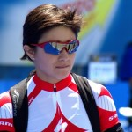

Una notable actuación cumplió la chilena Bárbara Riveros en el Triatlón 70.3 de Taiwán, al imponerse con una marca de 4.13’22”, que es casi 20 minutos más baja que la registrada en la última edición de Pucón 70.3, sobre las mismas distancias (1,9 kilómetros de natación, 21 k de trote y 90 k de bicicleta). La nacional superó a la checa Radka Vodičková (4.15’47”) y a la rusa Mariya Shorets (4.19’41”), cuyos tiempos estuvieron a más dos de minutos y seis minutos de Riveros, respectivamente. Tan bueno fue el registro de Chika que se ubicó duodécima en la general, considerando también la competencia masculina profesional. Con esto, se abre auna extraordinario proyección para un Ironman en Hawai, donde podría cronometrar cerca de nueva horas, con lo que podría alcanzar un podio que Chile no consigue en la prueba estadounidense desde que lo hiciera Cristián Bustos en 1992, cuando fue segundo tras Mark Allen.
Una notable actuación cumplió la chilena Bárbara Riveros en el Triatlón 70.3 de Taiwán, al imponerse con una marca de 4.13’22”, que es casi 20 minutos más baja que la registrada en la última edición de Pucón 70.3, sobre las mismas distancias (1,9 kilómetros de natación, 21 k de trote y 90 k de bicicleta).
La nacional superó a la checa Radka Vodičková (4.15’47”) y a la rusa Mariya Shorets (4.19’41”), cuyos tiempos estuvieron a más dos de minutos y seis minutos de Riveros, respectivamente. Tan bueno fue el registro de Chika que se ubicó duodécima en la general, considerando también la competencia masculina profesional.
Con esto, se abre auna extraordinario proyección para un Ironman en Hawai, donde podría cronometrar cerca de nueva horas, con lo que podría alcanzar un podio que Chile no consigue en la prueba estadounidense desde que lo hiciera Cristián Bustos en 1992, cuando fue segundo tras Mark Allen.